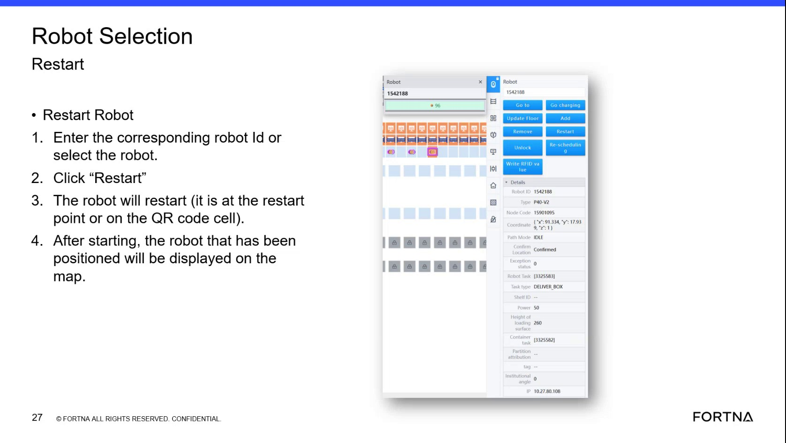

| Procedure ID | proc_handle_restart_robot_cannot_see_label_indicator_reacquisition_v1 |
|---|---|
| Title | Handle restart when robot cannot see a label: use indicator color states and verify map visibility after label reacquisition |
| Procedure Type | recovery |
| Primary Role | operator |
| Support Safe | Yes |
| Capability Tags | robot_command_or_task_state, device_roster_state, e_stop_or_safety_stop |
| Access Surface | rms_ui, physical_floor |
| Audience Roles | operator |
| Failure Pattern Tags | None |
| Validation Status | needs_sme_review |
| Merge Status | source_finalized |
If a robot is restarted but does not snap back onto the map because it cannot see a label, use the documented indicator color behavior (flashing blue → solid blue; solid green indicates restart cycle/brakes locked) and perform the source-described physical label reacquisition steps. Then clear the E stop and confirm the robot appears successfully on the map.
Use when a robot was restarted but does not automatically snap back onto the map because it cannot see a label.

Responsible role: operator
Instruction:
On the RMS / fleet status UI map view, observe whether the restarted robot is displayed/positioned on the map.
Expected result:
The robot is either displayed on the map (automatic recovery) or not displayed/positioned (needs further recovery steps).
Responsible role: operator
Instruction:
Locate the robot’s indicator and look for the documented “flashing blue sign” state indicating the robot can’t see a label.
Expected result:
You observe the flashing blue indicator state when the robot cannot see a label.
Responsible role: operator
Instruction:
When the robot is in the flashing blue state, perform the physical recovery: E stop the system, walk into the floor, and push the robot onto the label.
Expected result:
After pushing the robot onto the label, the robot identifies the label and its indicator transitions from flashing blue to solid blue.
Stop or Escalate If:
Responsible role: operator
Instruction:
Observe the robot indicator and confirm it transitions from flashing blue to solid blue after it identifies the label.
Expected result:
Indicator goes from flashing blue to solid blue.
Stop or Escalate If:
Responsible role: operator
Instruction:
Clear the E stop, then check the RMS / fleet status UI map view to confirm the robot is successfully showing on the map.
Expected result:
After clearing E stop, the robot appears successfully on the map.
Stop or Escalate If:
Responsible role: operator
Instruction:
If the robot is in the restart cycle state described as “solid green,” wait until it turns green before moving it because the brakes stay locked.
Expected result:
You do not move the robot while brakes are locked; you wait until the robot reaches the expected green state before moving.
Stop or Escalate If: